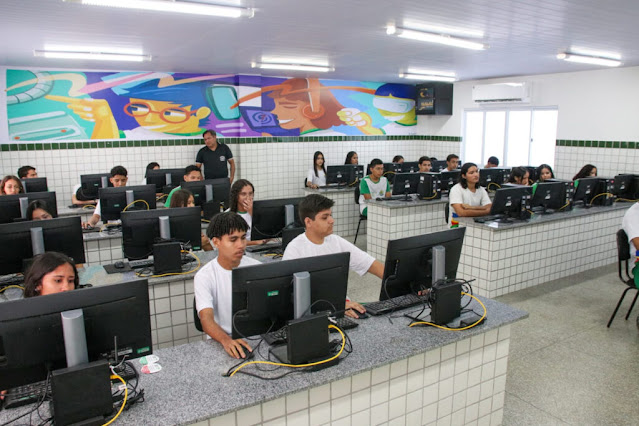

Bem-vindo ao CETI Memória Viva
Este projeto tem como objetivo preservar a história, as memórias e os momentos importantes da CETI Hesíchia de Sousa Brito.
Aqui iremos reunir fotografias, documentos, acontecimentos, projetos e histórias que fazem parte da nossa comunidade escolar.
Nossa Escola
🏫 A Escola
A CETI Hesíchia de Sousa Brito faz parte da história educacional de Piracuruca.

🔍 Clique para ampliar👨🎓 Estudantes
Nossa escola é formada por estudantes, professores e profissionais comprometidos com o saber.
 🔍 Clique para ampliar
🔍 Clique para ampliar
💻 Tecnologia
O curso Técnico em Desenvolvimento de Sistemas aproxima os estudantes da tecnologia e inovação.
 🔍 Clique para ampliar
🔍 Clique para ampliar
🎭 Cultura
A escola também promove atividades culturais, artísticas e educativas.
 🔍 Clique para ampliar
🔍 Clique para ampliar
Nossa História, Nosso Orgulho: A Trajetória Educacional de Piracuruca
A história da CETI Hesíchia de Sousa Brito está profundamente ligada à história da educação de Piracuruca. Antes de receber o nome Hesíchia, o espaço onde a escola funcionou passou por diferentes usos e instituições, acompanhando as necessidades educacionais e sociais da comunidade.
Este registro histórico reúne memórias e relatos que ajudam a compreender a trajetória dos prédios, das escolas, dos professores, dos estudantes e, principalmente, das pessoas que contribuíram para a construção da educação piracuruquense.
1. O primeiro prédio: da CBIA à Escola Monsenhor Benedito
O primeiro prédio foi construído pelo município para funcionar a CBIA, um programa ligado à Secretaria de Assistência Social, que na época era denominada SERSOM.
Posteriormente, o programa foi extinto e o prédio passou a abrigar a Escola Monsenhor Benedito Cantuária de Almeida Sousa. Esse era o nome registrado na fachada do primeiro prédio.
A Escola Monsenhor Benedito atendia ao antigo ensino primário e fez parte da formação de várias gerações de crianças de Piracuruca.
2. O desejo de formar professoras em Piracuruca
Durante esse período, muitas famílias enfrentavam uma dificuldade para garantir a formação profissional de suas filhas. As jovens que desejavam se formar professoras precisavam viajar para Piripiri, onde estudavam no Colégio das Irmãs.
Para uma cidade como Piracuruca, isso representava um grande desafio. As famílias precisavam lidar com a distância, os custos e todas as dificuldades de enviar suas filhas para estudar em outra cidade.
Cresceu, então, entre as famílias piracuruquenses, o desejo de que a própria cidade pudesse oferecer uma formação para o magistério.
Atendendo a esse anseio, o prefeito Gonçalo Rodrigues Magalhães desativou a Escola Monsenhor Benedito e fez funcionar naquele espaço a Escola Normal Hesíchia de Sousa Brito.
A criação da Escola Normal representou uma conquista importante para a educação local, especialmente para as jovens que desejavam seguir a carreira do magistério sem precisar deixar Piracuruca.
3. 1988: as primeiras turmas da Escola Normal
O ano de 1988 marcou o início das primeiras turmas da Escola Normal Hesíchia de Sousa Brito. Foram formadas as primeiras turmas, identificadas como A, B e C.
Dona Aracely foi a primeira diretora da escola. Sua presença na direção carregava um significado especial, pois a instituição levava o nome de sua própria avó, Dona Hesíchia de Sousa Brito.
A Escola Normal passou a representar uma nova oportunidade para a juventude piracuruquense, consolidando a formação de professores dentro da própria cidade.
4. As transformações da educação brasileira
Com o passar dos anos, ocorreram importantes mudanças na educação brasileira. O antigo curso pedagógico perdeu espaço e importância dentro do novo modelo de formação educacional.
Essas transformações também modificaram a organização das escolas de Piracuruca, fazendo com que a Escola Hesíchia passasse por uma nova etapa de sua história.
5. O prédio do Gregório Taumaturgo de Azevedo e a transferência para o Estado
O Estado havia construído o prédio destinado a uma nova unidade escolar: Gregório Taumaturgo de Azevedo.
Posteriormente, conforme a memória registrada, a Escola Hesíchia foi transferida para o Estado. Há relatos de que essa transferência ocorreu durante a administração do prefeito Linin, informação que ainda poderá ser confirmada por meio de documentos oficiais.
Com essa mudança, o nome Gregório Taumaturgo de Azevedo deixou de permanecer como referência daquela unidade escolar, enquanto o nome Hesíchia de Sousa Brito continuou atravessando as décadas e permanece ligado à instituição até os dias atuais.
6. O retorno da Escola Monsenhor Benedito
Com a saída da Escola Hesíchia daquele primeiro espaço, o prédio que anteriormente havia abrigado a instituição voltou a funcionar como escola primária, retomando a presença da Escola Monsenhor Benedito Cantuária de Almeida Sousa.
Naquele período, o município ainda não oferecia o antigo ginásio, fazendo com que os estudantes precisassem buscar outras alternativas para continuar sua formação escolar.
Dessa forma, os mesmos espaços foram testemunhas de diferentes momentos da educação piracuruquense: primeiro a CBIA, depois a Escola Monsenhor Benedito, posteriormente a Escola Normal Hesíchia e, novamente, a Escola Monsenhor Benedito.
7. Dona Hesíchia: uma mulher à frente de seu tempo
A história da escola não pode ser contada sem destacar a trajetória de sua patrona, Dona Hesíchia de Sousa Brito.
Dona Hesíchia não era natural de Piracuruca. Ela veio para a cidade acompanhada de Cristina Neves, para lecionar por meio de um programa do Governo Federal.
Sua chegada a Piracuruca representa um episódio especialmente significativo. Ela veio para uma cidade pequena, distante de Teresina, para exercer a profissão de professora e construir uma nova vida.
Em uma época em que a sociedade era fortemente marcada pelo machismo e em que não era comum que mulheres assumissem iniciativas dessa natureza, Dona Hesíchia demonstrou coragem, determinação e independência.
Sua trajetória pode ser compreendida como um símbolo da força feminina e da capacidade de mulheres que, mesmo diante das limitações sociais de seu tempo, encontraram caminhos para trabalhar, ensinar e construir suas próprias histórias.
Foi em Piracuruca que Dona Hesíchia construiu sua vida. Ela casou-se na cidade e passou a fazer parte da comunidade que havia escolhido para viver e trabalhar.
"Dona Hesíchia foi uma mulher forte, corajosa e à frente de seu tempo. Chegou a Piracuruca para ensinar e acabou deixando seu nome marcado na história da educação da cidade."
8. Uma homenagem justa a uma mulher pioneira
Dar o nome de Hesíchia de Sousa Brito a uma instituição de ensino é uma homenagem que representa muito mais do que o nome de uma escola.
É uma forma de reconhecer a trajetória de uma mulher que deixou sua terra de origem, veio para uma pequena cidade do interior para exercer o magistério e construiu aqui sua vida.
Sua história simboliza a presença e a importância das mulheres na construção da educação de Piracuruca e merece ser conhecida pelas novas gerações.
Décadas depois, estudantes continuam entrando pelos portões da escola que leva seu nome. Hoje, novas tecnologias permitem que essa história seja registrada e preservada por aqueles que fazem parte da própria escola.
Assim, passado e presente se encontram: Dona Hesíchia ensinou em uma época em que poucas mulheres tinham as mesmas oportunidades que os homens; hoje, seu nome permanece associado a uma escola que continua formando novas gerações.
CETI Memória Viva
Preservar a história da Escola Hesíchia é preservar também a memória das pessoas, dos professores, dos estudantes e das famílias que ajudaram a construir a educação de Piracuruca.
Linha do Tempo da História da Escola
Uma trajetória construída ao longo de décadas, marcada por mudanças nos espaços, nas instituições e nas necessidades educacionais de Piracuruca.
📍 Primeiro período
O município constrói o primeiro prédio para funcionamento da CBIA, programa ligado à Secretaria de Assistência Social, então denominada SERSOM.
🏫 Escola Monsenhor Benedito
Com a extinção da CBIA, o prédio passa a abrigar a Escola Monsenhor Benedito Cantuária de Almeida Sousa, destinada ao antigo ensino primário.
📚 O desejo de formar professoras
Famílias da cidade manifestam o desejo de que suas filhas possam cursar a formação para o magistério em Piracuruca, sem precisar viajar para o Colégio das Irmãs, em Piripiri.
1987
É criada a Escola Normal Hesíchia de Sousa Brito, durante a administração do prefeito Gonçalo Rodrigues Magalhães, atendendo ao anseio da comunidade pela formação de professoras na própria cidade.
1988
Começam as atividades da Escola Normal Hesíchia de Sousa Brito. Surgem as primeiras turmas, identificadas como A, B e C. Dona Aracely assume como primeira diretora.
🎓 Formação de professores
A Escola Normal passa a desempenhar um papel importante na formação de professores de Piracuruca, permitindo que jovens da cidade tivessem acesso ao magistério sem precisar sair do município.
🔄 Mudanças na educação brasileira
Com as transformações na educação brasileira, o antigo curso pedagógico perde espaço e importância, provocando mudanças na organização e na finalidade da escola.
🏛️ Nova estrutura escolar
O Estado constrói o prédio destinado à unidade escolar Gregório Taumaturgo de Azevedo.
🏛️ Transferência para o Estado
A Escola Hesíchia é posteriormente transferida para o Estado. Conforme a memória registrada, essa mudança teria ocorrido durante a administração do prefeito Linin.
A data exata ainda precisa ser confirmada por documentos oficiais.
🏫 Retorno da Escola Monsenhor Benedito
Com a saída da Escola Hesíchia do primeiro prédio, a Escola Monsenhor Benedito Cantuária de Almeida Sousa volta a funcionar no espaço, atendendo novamente ao ensino primário.
📖 Uma nova etapa
A Escola Hesíchia continua sua trajetória e passa a integrar a estrutura educacional do Estado, mantendo vivo o nome de sua patrona.
👩🏫 A memória de Dona Hesíchia
A trajetória de Dona Hesíchia de Sousa Brito permanece como parte fundamental da identidade da escola: uma mulher que veio de outra cidade para lecionar em Piracuruca, em uma época marcada por fortes limitações sociais às mulheres, e aqui construiu sua vida.
2026
A memória dessa trajetória passa a ser preservada digitalmente por meio do projeto CETI Memória Viva, desenvolvido pelos estudantes do 1º Ano do Curso Técnico em Desenvolvimento de Sistemas.
Galeria de Fotos e Memórias
Explore fotografias históricas e momentos marcantes da nossa instituição.
Fachada principal da CETI Hesíchia de Sousa Brito.

Registro histórico do acervo educacional.

Atividades com estudantes e professores.

Equipe e registros do curso técnico.
Eventos da Escola
A vivência escolar vai muito além da sala de aula. Conheça os principais eventos que marcam nossa trajetória:
🔬 Feira de Ciências e Tecnologia
Exposição de projetos inovadores desenvolvidos pelos alunos do curso técnico e do ensino médio.
 🔍 Clique para ampliar
🔍 Clique para ampliar
🏆 Jogos Interclasse
Momentos de integração, esporte, saúde e espírito de equipe entre os estudantes.
 🔍 Clique para ampliar
🔍 Clique para ampliar
🎭 Festivais Culturais
Apresentações artísticas, musicais e teatrais que valorizam a cultura e o talento da juventude.
 🔍 Clique para ampliar
🔍 Clique para ampliar
🇧🇷 7 de Setembro
Participação tradicional dos estudantes e da banda escolar nas atividades cívicas e culturais de Piracuruca.
 🔍 Clique para ampliar
🔍 Clique para ampliar
📚 Semana Literária
Incentivo à leitura, palestras, rodas de conversa e valorização da história e literatura local.
 🔍 Clique para ampliar
🔍 Clique para ampliar
🎓 Formaturas e Conquistas
Celebrações que marcam a conclusão de etapas e o sucesso profissional dos nossos egressos.
 🔍 Clique para ampliar
🔍 Clique para ampliar
Vídeos e Registros Audiovisuais
Assista a depoimentos, apresentações e coberturas especiais sobre a história e os projetos da escola.
🎥 Documentário: Memória Viva
Conheça os bastidores da criação do projeto e o resgate histórico de Piracuruca.
💻 Mostra de Tecnologia
Apresentação dos sistemas e aplicativos desenvolvidos pelos alunos do curso técnico.
Depoimentos e Histórias de Vida
O que dizem aqueles que fazem e fizeram parte da nossa trajetória educacional:
"Estudar na CETI Hesíchia de Sousa Brito e participar do curso técnico abriu minha mente para o mundo da tecnologia. Ver a história da nossa escola sendo digitalizada por nós mesmos é gratificante."
— Aluno(a) do Curso de Desenvolvimento de Sistemas
 🔍 Clique para ampliar
🔍 Clique para ampliar
"É uma emoção ver o nome da minha avó e a trajetória de tantas décadas de ensino sendo homenageadas e preservadas com tanto carinho pelas novas gerações."
— Membro da Comunidade / Família Homenageada
 🔍 Clique para ampliar
🔍 Clique para ampliar
Liderança e Mentoria: Conheça Quem Faz a Diferença
O projeto CETI Memória Viva está sendo desenvolvido pelos estudantes do 1º Ano de Desenvolvimento de Sistemas.
👩💼 Emanoelly de Jesus Silva Sousa
Diretora Operacional e Pedagógica — CETI Hesíchia de Sousa Brito
À frente da gestão, consolidou-se como uma das principais impulsionadoras da modernização do ensino público em Piracuruca. Sob sua liderança, a instituição expandiu o tempo integral e fortaleceu os cursos técnicos de tecnologia. Sua gestão une inovação pedagógica e respeito ao patrimônio histórico local.
 🔍 Clique para ampliar
🔍 Clique para ampliar
👨💻 Josué de Carvalho Araújo
Professor e Mentor Técnico em Desenvolvimento de Sistemas
Atua ministrando disciplinas fundamentais no curso técnico. Idealizou e coordenou o projeto de resgate e digitalização da memória histórica das escolas Hesíchia de Sousa Brito e Hermínio Conde, orientando os alunos na construção de acervos digitais.
🔍 Clique para ampliar
💻 Nossa Turma
1º Ano de Desenvolvimento de Sistemas
Os alunos estão aprendendo HTML, CSS, pesquisa histórica e tecnologias web para transformar essas informações em um museu digital interativo e acessível.
 🔍 Clique para ampliar
🔍 Clique para ampliar